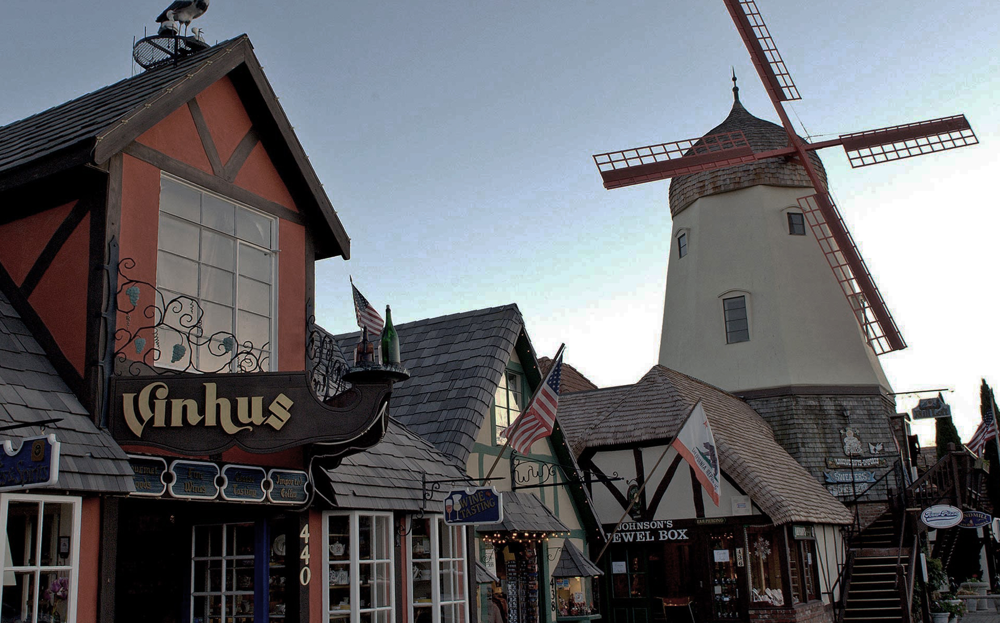

Solvang was founded in 1911 by three members of a group of Danish educators, whom a year earlier had formed the Danish-American Corporation. The plan of the three was to establish a Danish village, where the arts, crafts and customs of their homeland could be created anew, and to build and staff a Danish Folk School, similar to those which were so successful in Denmark. These three educators were Rev. J.M. Gregersen, Rev. B. Nordentoft and Peter B. Hornsyld, all from Iowa.
Entranced by the natural beauty and ideal climate, as well as finding the soil fertile and the water supply adequate, they purchased 9,000 acres of the old Spanish land grant, Rancho San Carlos de Jonata.Old Mission Santa In., which had stood so long by itself on this remote mesa, was to begin seeing great changed with the birth of the village of Solvang. (In English: "Sunny Meadow".)
"Discovery" by visitors to Solvang in the late 1940's gave the Valley a year-round economic boost through the many phases of tourism, to the irrigated crops of today, including the vast vineyards that supply grapes for over 30 wineries.
The Red Viking Restaurant is one of the original buildings in Solvang. Visit the Elverhoj Mitscum of History and Art at 1624 Elverhoy Way to see a diorama of Solvang the way it was. To see the way churches were built in Denmark in the 1100's, visit historic Bethania Lutheran Church at 603 Atterdag Road.
